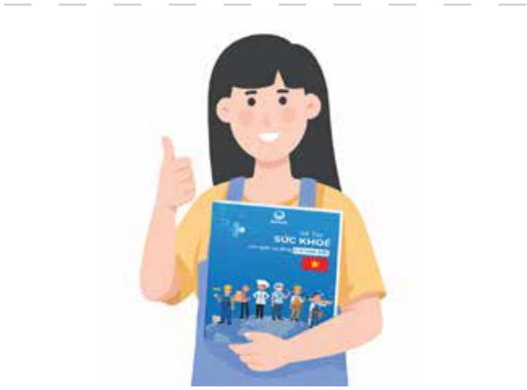
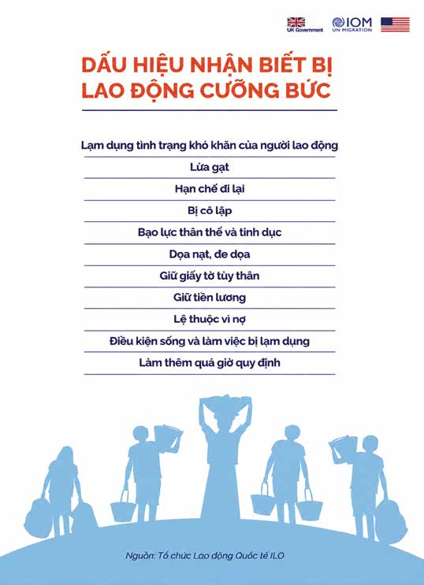

Giới thiệu:
Lời nói đầu và hướng dẫn sử dụng sổ tay
Mục lục:
-
Giới thiệu: Lời nói đầu và hướng dẫn sử dụng sổ tay
-
Chương 1: Cơ sở y tế và các chính sách bảo hiểm
- Câu 1. Tôi là người lao động của một công ty, hiện đang gặp vấn đề sức khoẻ và muốn đi khám bệnh. Tôi có thể khám, chữa bệnh ở đâu?
- Câu 2. Trước khi đi khám, nếu có thắc mắc, tôi có thể hỏi thông tin từ ai?
- Câu 3. Khi đi khám, tôi cần mang theo giấy tờ gì?
- Câu 4. Nếu tôi được chẩn đoán mắc bệnh mà cần phải nằm viện điều trị, tôi sẽ phải làm gì?
- Câu 5. Nếu bệnh tình của tôi không tiến triển, tôi có thể chuyển sang điều trị tại một bệnh viện hoặc cơ sở y tế khác không?
- Câu 6. Tôi cần làm gì để được chuyển viện?
- Câu 7. Làm thế nào để mua thuốc? Tôi có thể mua thuốc trực tiếp tại nhà thuốc, trên website hoặc ứng dụng di động mà không cần đơn thuốc của bác sĩ được không?
- Câu 8. Tôi thấy trên các trang mạng xã hội như Facebook và YouTube có nhiều quảng cáo về các phương pháp chữa bệnh, gồm cả thuốc tây y và đông y. Tôi có nên tin tưởng và liên hệ với những nguồn thông tin này không?
- Câu 9. Tôi từ nơi khác tới làm việc và có ký hợp đồng lao động với công ty. Vậy sau bao lâu làm việc tại công ty thì tôi được đóng BHXH bắt buộc?
- Câu 10. Tôi có được đăng ký tham gia bảo hiểm xã hội bắt buộc và bảo hiểm thất nghiệp không? Nếu được thì ai sẽ đăng ký cho tôi và số tiền tôi phải đóng hàng tháng được tính như thế nào?
- Câu 11. Tôi có thể kiểm tra bằng cách nào để biết mình đã được công ty đăng ký tham gia BHXH bắt buộc và bảo hiểm thất nghiệp hay chưa, cũng như việc đóng bảo hiểm đã đúng và đủ hay không?
- Câu 12. Công ty đã đăng ký cho tôi tham gia BHXH bắt buộc. Vậy tôi có thể hưởng các chế độ, trợ cấp như thế nào và các chế độ đó bao gồm những gì?
- Câu 13. Trong trường hợp người lao động gặp tai nạn giao thông nghiêm trọng, họ có được bảo hiểm xã hội bắt buộc chi trả không?
- Câu 14. Tôi là người lao động đã làm việc và tham gia đóng BHXH bắt buộc tại công ty được 15 năm. Do vấn đề sức khỏe, tôi không thể tiếp tục làm việc. Vậy tôi có thể nghỉ việc không? Nếu nghỉ việc, tôi có được hưởng chế độ bảo hiểm tương ứng với thời gian đã đóng trong 15 năm qua không?
- Câu 15. Nếu tôi bị bệnh ung thư vú, tôi được hưởng quyền lợi gì từ các loại bảo hiểm bắt buộc?
- Câu 16. Tôi đã ký hợp đồng lao động không xác định thời hạn với công ty, vậy tôi có được đóng bảo hiểm y tế bắt buộc không? Ai là người đóng, tôi hay công ty?
- Câu 17. Nếu tôi bị ốm và muốn đi khám bệnh, tôi cần làm gì để có thể sử dụng thẻ bảo hiểm y tế tại các cơ sở y tế? Những dịch vụ y tế nào sẽ được bảo hiểm y tế chi trả?
- Câu 18. (Chị Ngọc, 29 tuổi): Tôi đã đi khám bệnh bác sĩ chẩn đoán bị viêm phổi và chỉ định tôi vào viện điều trị nội trú (theo bác sĩ nói tôi sẽ nằm viện 5-7 ngày). Tôi muốn biết những dịch vụ y tế nào khi điều trị nội trú được bảo hiểm y tế chi trả?
- Câu 19. Nếu có thắc mắc hay cần giải thích về bảo hiểm y tế thì tôi nên liên hệ với ai?
- Câu 20. (Anh Thọ, 35 tuổi): Hiện tại tôi đang điều trị nội trú cho chứng đau lưng ở bệnh viện, nhưng tình trạng bệnh không thuyên giảm và được bác sĩ chỉ định chuyển đến một bệnh viện khác. Trong trường hợp này bảo hiểm y tế có tiếp tục chi trả chi phí chữa bệnh sau khi tôi chuyển đến bệnh viện khác không?
- Câu 21. Tôi là lao động nữ đang làm việc cho một công ty, đã tham gia BHXH bắt buộc và bảo hiểm y tế, hiện đang mang thai. Nếu sinh con ở bệnh viện công lập, tôi sẽ được bảo hiểm chi trả như thế nào?
- Câu 22. Mức hưởng bảo hiểm sinh con tại bệnh viện trái tuyến và bệnh viện tư có khác nhau không?
- Câu 23. Chị Ngọc (29 tuổi, công nhân may tại Bắc Ninh, có hai con nhỏ). Chị Ngọc muốn biết quyền lợi của lao động nữ khi có con nhỏ.
-
Chương 2: An toàn lao động và sức khỏe nghề nghiệp
- Câu 24. Tôi có thể yêu cầu công ty luôn cung cấp đầy đủ găng tay bảo hộ lao động không?
- Câu 25. Tôi làm trong một công ty cơ khí, bị ô nhiễm tiếng ồn với cường độ cao. Tôi nên làm gì để bảo vệ được bản thân và những người lao động khác tránh được tiếng ồn?
- Câu 26. Tôi có thể được cung câp thông tin rõ ràng về qui định an toàn lao động (ATLĐ) và trách nhiệm của doanh nghiệp khi bắt đầu làm việc ở một công ty không?
- Câu 27. Khi làm việc theo hợp đồng lao động, tôi có được tham gia đào tạo hoặc huấn luyện về an toàn lao động không?
- Câu 28. Tôi đang làm việc theo hợp đồng lao động. Nếu trong quá trình làm việc xảy ra tai nạn bị thương nặng thì tôi nên làm gì? Tôi nên liên hệ với ai để được hỗ trợ?
- Câu 29. Nếu tôi bị tai nạn lao động tại nơi làm việc và phải nhập viện điều trị, tôi sẽ được hưởng những hỗ trợ gì? Chi phí điều trị sẽ do ai chi trả?
- Câu 30. Trong trường hợp tôi bị ốm đau hoặc tai nạn lao động, tôi có được nghỉ việc và hưởng chế độ có lương không?
- Câu 31. Nếu tôi bị chấn thương do tai nạn lao động và không thể tiếp tục làm công việc hiện tại, liệu công ty có sắp xếp cho tôi làm việc ở vị trí khác phù hợp hơn không?
- Câu 32. Nếu tôi bị chấn thương do tai nạn lao động và không thể tiếp tục làm công việc hiện tại, tôi có được bồi thường không? Thủ tục bồi thường như thế nào?
- Câu 33. Đồng nghiệp của tôi không may qua đời do tai nạn lao động tại công ty. Chủ công ty và BHXH có phải bồi thường cho anh ấy không?
- Câu 34. Thủ tục bồi thường sẽ được thực hiện như thế nào?
- Câu 35. Trong trường hợp phải điều trị tại bệnh viện, tôi sẽ được hưởng chế độ bảo hiểm như thế nào?
- Câu 36. Tôi có được khám sức khỏe định kỳ nếu làm việc theo hợp đồng bán thời gian hoặc thời vụ không?
- Câu 37. Khám sức khỏe định kỳ cho người lao động (cả nam giới và nữ giới) sẽ bao gồm thăm khám và xét nghiệm nào?
- Câu 38. Tôi làm công việc liên quan tới hóa chất và chất độc hại tại nhà máy. Tôi có được khám sức khỏe định kỳ thường xuyên hơn không? Ngoài ra, nếu mắc bệnh nghề nghiệp, tôi sẽ được hưởng những quyền lợi và hỗ trợ nào?
- Câu 39. Anh Thọ hỏi: Bạn anh là một người làm trong nhà máy sản xuất xi-măng 3 năm, bị bệnh bụi phổi. Như vậy có phải bệnh nghề nghiệp không?
- Câu 40. Nếu đúng là bệnh nghề nghiệp, thì bạn anh được hưởng những quyền lợi gì?
- Câu 41. Tôi là Mai, 23 tuổi, người lao động đến từ một tỉnh phía Bắc chưa kết hôn, làm trong công ty linh kiện điện tử của nước ngoài được hai năm. Quản lý trực tiếp tôi là người Việt Nam. Người quản lý này thường la mắng và đối xử bất công với tôi tại nơi làm việc do tôi không đồng ý một số yêu cầu khiếm nhã của ông ấy. Tôi nên làm gì trong trường hợp này?
- Câu 42. Tôi thường xuyên bị một đồng nghiệp nam cư xử rất khó chịu và hay nhận xét các bộ phận nhạy cảm của tôi và đồng nghiệp nữ tại nơi làm việc. Đây có phải là hành vi quấy rối tình dục không?
- Câu 43. Tôi và các bạn nữ bị anh ta cư xử như vậy, chúng tôi nên làm gì?
- Câu 44. Bạn tôi làm trong một nhà hàng của một công ty khá nổi tiếng. Cô ấy thường bị khách hàng quấy rối tình dục (có hành vi đụng chạm không phù hợp, rủ đi chơi, thậm chí gạ gẫm qua đêm) khiến cô ấy cảm thấy bị xúc phạm. Tôi nên khuyên bạn tôi làm gì?
- Câu 45. Bạn của chị Ngọc làm giúp việc cho một gia đình. Gần đây, ông chủ có hành vi cố tình chạm vào mông, kèm theo những lời nói đùa cợt, gạ gẫm đi chơi. Hành vi này của ông chủ có phải là bình thường không? Bạn của chị Ngọc rất lo lắng, chị ấy nên làm gì?
- Câu 46. Bạn gái của Mai cho biết cô ấy đã bị bạn trai ép quan hệ tình dục trong khi bạn ấy chưa sẵn sàng cho việc này, hiện bạn ấy rất lo lắng. Trong trường hợp này, có phải bạo lực tình dục không?
- Câu 47. Bạn của tôi cần phải làm gì trong trường hợp này?
-
Chương 3: Chăm sóc sức khoẻ và môi trường sống
- Câu 48. Anh Đạt hỏi: Tôi chưa kết hôn nhưng có nhu cầu quan hệ tình dục. Khi quan hệ, tôi cần làm gì để đảm bảo an toàn?
- Câu 49. Tại sao cần sử dụng bao cao su đúng cách? Sử dụng bao cao su đúng cách là như thế nào?
- Câu 50. Sau khi quan hệ tình dục với bạn gái, tôi thấy bị đau khi đi tiểu. Tôi gặp vấn đề gì?
- Câu 51. Tôi là Mai, chưa kết hôn. Tôi và bạn trai có quan hệ tình dục nhưng chưa muốn có thai. Ngoài việc dùng bao cao su, nam và nữ thanh niên có thể áp dụng biện pháp tránh thai nào khác?
- Câu 52. Nếu đi khám, tôi nên đến đâu?
- Câu 53. Nếu tôi được chẩn đoán là mắc một trong các bệnh lây truyền qua đường tình dục, tôi có thể tự điều trị được không? Nếu không chữa trị các bệnh lây truyền qua đường tình dục cẩn thận, tôi có thể bị hậu quả gì?
- Câu 54. Anh Đạt hỏi: Làm thế nào để tôi có thể bảo vệ bản thân khỏi các bệnh lây truyền qua đường tình dục?
- Câu 55. Anh Đạt hỏi: Bạn tôi làm cùng công ty và mới đi xét nghiệm máu được thông báo là đã nhiễm HIV (anh ấy lo sợ không dám nói với ai). Liệu bạn tôi có cần phải thông báo với người quản lý hoặc người sử dụng lao động) không?
- Câu 56. Tôi là Đạt. Tôi đã có người yêu ở quê và gần đây tôi có quan hệ tình dục với một cô gái (tôi có quen nhưng không biết nhiều về cô ấy). Tôi đang rất lo sợ bị mắc bệnh lây truyền qua đường tình dục do mối quan hệ này. Tôi có thể bị mắc bệnh gì khi tôi có quan hệ tình dục như vậy?
- Câu 57. Nếu không may bị mắc các bệnh đó, tôi có thể nhận biết qua các biểu hiện nào?
- Câu 58. Tôi có nên nói việc mình có những biểu hiện bất thường với cô gái mà tôi đã quan hệ không?
- Câu 59. Kinh nguyệt của tôi không được đều. Tôi nên làm gì?
- Câu 60. Tôi thấy nhiều đồng nghiệp nữ và bạn tôi nói là mỗi lần sinh hoạt tình dục xong lại uống thuốc tránh thai khẩn cấp. Liệu thuốc tránh thai khẩn cấp có nguy hiểm và gây hậu quả gì không?
- Câu 61. Tôi nên dùng thuốc tránh thai khẩn cấp trong trường hợp nào?
- Câu 62. Tôi 22 tuổi, đã có bạn trai và thỉnh thoảng chúng tôi có quan hệ tình dục. Gần đây tôi thấy hay buồn nôn và chóng mặt nên lo lắng có thể đã mang thai nhưng hiện tại tôi chưa muốn lập gia đình. Nếu tôi có thai và không muốn sinh con thì tôi nên làm thế nào?
- Câu 63. Nếu tôi có thai ngoài ý muốn và muốn chấm dứt thai kỳ thì tôi phải làm thế nào?
- Câu 64. Phá thai có nguy hiểm không?
- Câu 65. Có người nói nếu phá thai sau này tôi có thể bị vô sinh? Điều này có đúng không?
- Câu 66. Tôi là Mai, 23 tuổi, sắp kết hôn. Nhiều bạn khuyên tôi nên đi xét nghiệm viêm gan B và HIV trước hôn nhân. Việc này có thực sự cần thiết không? Tại sao bạn lại khuyên tôi như vậy?
- Câu 67. Tôi nên đi xét nghiệm ở đâu?
- Câu 68. Tôi đang mang thai và cảm thấy khoẻ mạnh, tôi có cần đi khám thai không?
- Câu 69. Tôi nên đi khám thai ở đâu?
- Câu 70. Tôi nên đi khám bao nhiêu lần trong kỳ mang thai? Và nên khám vào thời gian nào của thai kỳ?
- Câu 71. Tôi có phải tiêm hay uống thuốc gì trong thời kỳ mang thai không?
- Câu 72. Người lao động nên làm gì khi cảm thấy căng thẳng trong công việc?
- Câu 73. Tôi rất nhớ gia đình và bạn bè trong quãng thời gian phải sống xa quê. Tôi có thể làm gì để bớt nhớ nhà?
- Câu 74. Tôi đang mang thai con đầu lòng và nghe nhiều về trầm cảm đối với phụ nữ trong thời kỳ mang thai và sau sinh. Tôi nên làm gì?
- Câu 75. Tôi rất phân vân, có phải người có vấn đề về tâm thần là người điên không?
- Câu 76. Tôi vừa chuyển việc sang công ty mới. Gần đây, tôi cảm thấy buồn, dễ cáu giận và khó kiểm soát cảm xúc. Tôi nên làm gì để cải thiện tâm trạng và cảm thấy tốt hơn?
- Câu 77. Tôi là lao động nữ tại công ty dệt may. Gần đây, tôi cảm thấy mất hứng thú với các hoạt động mình từng yêu thích và đôi khi nghĩ đến tự tử. Tôi nên làm gì?
- Câu 78. Người lao động nên làm gì để bảo vệ giấc ngủ khi phải làm việc ca đêm?
- Câu 79. Thỉnh thoảng tôi bị chồng đánh khi anh ấy thua bạc và đòi tiền. Tôi cảm thấy suy nhược và mệt mỏi. Tôi nên làm gì?
- Câu 80. Tôi là nữ lao động 35 tuổi, tôi sống cùng chồng và hai con. Công việc của tôi ở công ty là làm theo ca: 1 tuần làm đêm và 2 tuần làm ngày và sau tuần làm đêm tôi được nghỉ 2 ngày. Trong lúc làm việc ở công ty, tôi phải đứng toàn bộ thời gian để kiểm tra sản phẩm trong chuỗi công việc. Tôi nên làm gì để bản thân không bị căng thẳng và giảm mệt mỏi về cuộc sống hiện tại?
- Câu 81. Tôi là người đồng tính và cảm thấy mình dễ bị phân biệt đối xử. Điều này có ảnh hưởng tới sức khỏe tâm thần của tôi không? Tôi có thể gặp phải các vấn đề sức khoẻ gì?
- Câu 82. Tôi nên làm gì và tìm đến đâu để được tư vấn?
- Câu 83. Chị Mai là công nhân trong một nhà máy điện tử tại khu công nghiệp (KCN) ở Hà Nội, nơi có mật độ công nhân cao và điều kiện sống khá khó khăn. Chị thuê nhà trọ ở chung với bạn trai. Môi trường sống của chị Mai trong khu vực này là sự kết hợp giữa môi trường công nghiệp và sống trong khu trọ không đảm bảo về không gian sống và điều kiện vệ sinh. Liệu tình trạng ô nhiễm tiếng ồn và không khí là những yếu tố có thể ảnh hưởng đến sức khỏe của chị Mai và bạn trai chị không? Chị Mai và bạn trai nên làm gì để cải thiện môi trường sống tốt hơn?
- Câu 84. Tôi mới chuyển đến thành phố mới sinh sống. Làm thế nào để tôi có thể tìm được nhà trọ phù hợp?
- Câu 85. Chị Ngọc (29 tuổi) và gia đình sống tại một khu công nghiệp ở Bắc Ninh, nơi có môi trường công nghiệp và ô nhiễm tiếng ồn. Chị Ngọc thường xuyên mất ngủ. Liệu sức khoẻ của chị Ngọc và gia đình có bị ảnh hưởng bởi tiếng ồn từ khu công nghiệp không?
- Câu 86. Anh Đạt (25 tuổi) sống trong một khu trọ tại thành phố Đồng Nai cùng với các bạn đồng nghiệp. Môi trường sống của anh có thể gặp phải các vấn đề như thiếu không gian sống riêng tư, chất lượng nhà trọ không đảm bảo về vệ sinh, và điều kiện sống bị ảnh hưởng bởi sự đông đúc, tắc nghẽn của khu vực công nghiệp. Anh Đạt nên làm gì?
- Câu 87. Nước sinh hoạt ở nhà trọ của tôi có vẻ không được tốt, nước có mùi và cặn bẩn. Điều này có ảnh hưởng đến sức khỏe của gia đình tôi tôi không? Tôi nên làm gì?
- Câu 88. Gần đây có một quán karaoke mới mở ngay cạnh nơi tôi ở. Tôi không thể ngủ được vì những tiếng ồn quá lớn từ quán karaoke. Điều này có hại cho sức khỏe của tôi không? Tôi nên làm gì?
- Câu 89. Khu trọ tôi ở rất chật chội, gần đây có nhiều người hàng xóm bị cúm A. Tôi nên làm gì để bảo vệ sức khỏe?
- Câu 90. Khu trọ tôi ở bị ngập úng do mưa lớn và luôn bị ảnh hưởng của mưa, bão khiến cuộc sống sinh hoạt thường ngày gặp rất nhiều khó khăn. Tôi phải làm gì để bảo vệ sức khỏe và đảm bảo an toàn?
- Câu 91. Khu trọ tôi thuê ở xa bệnh viện, hoàn cảnh gia đình tôi rất khó khăn. Nếu bị bệnh, tôi phải làm thế nào?
-
Chương 4: Phòng ngừa bệnh tật
- Câu 92. Làm sao tôi biết mình có thể đang mắc các bệnh truyền nhiễm? Những biểu hiện đặc trưng của loại bệnh này là gì?
- Câu 93. Tôi bị ho và sốt, có phải tôi bị nhiễm trùng hô hấp không? Tôi có cần sử dụng thuốc kháng sinh không?
- Câu 94. Nếu bị nhiễm trùng hô hấp, tôi nên đi khám ở đâu?
- Câu 95. Gia đình tôi có con bị sốt xuất huyết. Tôi nên làm gì?
- Câu 96. Tôi cần làm gì để phòng tránh bệnh sốt xuất huyết cho gia đình?
- Câu 97. Bệnh lao có biểu hiện như thế nào?
- Câu 98. Tôi có thể đi khám và làm xét nghiệm bệnh lao ở đâu?
- Câu 99. Nếu tôi được chẩn đoán là bị mắc bệnh lao, tôi có thể tự mua thuốc điều trị được không?
- Câu 100. Tôi vừa bị chó lạ cắn khi đang trên đường đi làm về. Tôi có nguy cơ bị mắc bệnh dại không? Tôi cần làm gì để xử lý và phòng ngừa tạm thời?
- Câu 101. Tôi bị chó cắn, có thể chữa chó dại cắn bằng thuốc đông y không? Tôi nghe nhiều người nói, tiêm vắc-xin phòng dại rất hại sức khỏe?
- Câu 102. Tôi và mấy người bạn đi nhậu (lòng lợn, tiết canh). Sau khi ăn xong về, ba trong sáu người chúng tôi bị đau bụng, tiêu chảy nặng. Có phải chúng tôi bị đau bụng đi ngoài là do ăn tiết canh không? Chúng tôi phải làm gì?
- Câu 103. Anh Thọ 35 tuổi đến từ tỉnh Ninh Bình và đã kết hôn, hỏi: Sau nhiều năm làm việc tại một công ty, tôi vừa bị mất việc nên tâm trạng bất ổn. Tôi thường rủ bạn bè đi uống rượu để giải khuây. Sau khi uống rượu tôi cảm thấy tốt hơn, thậm chí nếu một ngày không uống rượu, tâm trạng của tôi lại trở nên tồi tệ. Trong trường hợp này, tôi nên làm gì?
- Câu 104. Anh Đạt 25 tuổi hỏi: Trước đây tôi chưa từng hút thuốc lá. Sau khi vào làm việc cho một công ty tại thành phố Đồng Nai, các bạn đồng nghiệp của tôi đã hút thuốc và đưa cho tôi hút thử. Sau khi hút thuốc, tâm trạng của tôi bớt căng thẳng, từ đó tôi thường xuyên sử dụng thuốc lá và ngày một nhiều lên. Như vậy có hại đến sức khoẻ không?
- Câu 105. Tôi nên làm gì để giảm hút thuốc lá?
- Câu 106. Sau giờ làm, tôi thường đến các quán bar, câu lạc bộ để gặp gỡ bạn bè. Một số bạn bè của tôi đã dùng ma túy và nhiều lần rủ rê tôi thử. Từ chối mãi tôi cảm thấy ngại, thậm chí tôi còn bị bạn bè nói là "khác người" và có nguy cơ bị tẩy chay. Tôi nên làm gì?
- Câu 107. Tôi đã có bạn gái ở quê, nhưng gần đây đã phát sinh quan hệ tình dục với gái mại dâm. Sau đó, tôi cảm thấy rất lo lắng. Tôi nên làm gì?
- Câu 108. Gần đây, đồng nghiệp của tôi kiếm được khá nhiều tiền từ việc đánh bạc qua các ứng dụng trên điện thoại. Điều này khiến tôi nảy sinh suy nghĩ muốn thử để “đổi đời”. Tôi có nên chơi thử không?
-
Thông tin bổ sung: Đường dây nóng và cơ sở y tế
Lời nói đầu
Sổ tay này được biên soạn dành cho người lao động di cư trong nước tại Việt Nam.
Sổ tay cung cấp những thông tin thiết thực và cần thiết nhằm hỗ trợ người lao động di cư trong nước bảo vệ sức khỏe và nâng cao chất lượng cuộc sống khi học tập, sinh sống và làm việc xa quê. Nội dung sổ tay hướng dẫn cách tiếp cận dịch vụ y tế, sử dụng bảo hiểm y tế, giữ an toàn trong lao động và sinh hoạt hằng ngày. Đồng thời, sổ tay cũng cung cấp các địa chỉ liên hệ và đường dây nóng quan trọng như cấp cứu, hỗ trợ y tế và hỗ trợ xã hội để người lao động có thể kịp thời tìm kiếm sự trợ giúp khi cần thiết.
Các thông tin trong sổ tay chỉ mang tính chất tham khảo, không được xem là tư vấn pháp lý.
Nội dung được cập nhật đến tháng 4 năm 2026.
Những quan điểm trình bày trong sổ tay là ý kiến của nhóm biên soạn, được xây dựng dựa trên ý kiến chuyên gia và kinh nghiệm thực tiễn; không nhất thiết phản ánh quan điểm của các tổ chức liên quan hoặc bất kỳ cơ quan nào thuộc Liên Hợp Quốc.
Sổ tay được biên soạn và hoàn thành với sự tài trợ của Tổ chức Di cư Quốc tế (IOM). Cuốn Sổ tay được biên soạn không nhằm mục đích thương mại. Chúng tôi rất mong nhận được ý kiến đóng góp từ phía quý vị để cuốn Sổ tay ngày càng hoàn thiện. Mọi ý kiến đóng góp vui lòng gửi đến https://mhwg.org.vn/vi/lien-he/.
Bạn có thể xem trực tiếp hoặc tải file PDF nội dung cuốn Sổ tay này tại trang web: https://mhwg.org.vn/thu-vien/hoặc quét mã QR bên dưới.
Nhóm Kỹ thuật Sức khỏe Người di cư Việt Nam
Trích dẫn: Nhóm Kỹ thuật Sức khỏe Người di cư Việt Nam (MHWG), 2026. Sổ tay sức khỏe dành cho người lao động di cư trong nước tại Việt Nam. MHWG, Hà Nội.
Lời cảm ơn
Sổ tay này được xây dựng với sự hỗ trợ của Tổ chức Di cư Quốc tế (IOM), thông qua sự phối hợp của các cơ quan liên quan và Nhóm Kỹ thuật Sức khỏe Người di cư Việt Nam (MHWG). Nội dung sổ tay do PGS. TS. Nguyễn Thị Thúy Hạnh, Trường Đại học Y Hà Nội biên soạn, với sự tham vấn của Tổ chức Di cư Quốc tế (IOM) và Nhóm Kỹ thuật Sức khỏe Người di cư. Trong quá trình xây dựng, sổ tay đã nhận được nhiều ý kiến đóng góp quý báu từ các chuyên gia và tổ chức. Nhóm Kỹ thuật Sức khỏe Người di cư (MHWG) xin trân trọng cảm ơn các cơ quan, tổ chức sau đây (sắp xếp theo thứ tự chữ cái) vì những đóng góp và hỗ trợ tích cực:
- Chi cục Dân số Thành phố Hồ Chí Minh
- Cục Phòng bệnh, Bộ Y tế
- Chương trình Phối hợp của Liên Hợp Quốc về HIV/AIDS (UNAIDS)
- Học viện Khoa học Xã hội Việt Nam
- Liên đoàn Thương mại và Công nghiệp Việt Nam (VCCI)
- Liên hiệp các Hội Khoa học và Kỹ thuật Việt Nam (tại Hà Nội và Thành phố Hồ Chí Minh)
- Tổ chức Y tế Thế giới (WHO)
- Trung tâm Nghiên cứu Dân số, Thông tin và Cơ sở dữ liệu
- Trường Đại học Khoa học Xã hội và Nhân văn
- Trường Đại học Y Hà Nội
- Viện Chiến lược và Chính sách Y tế
- Viện Khoa học Giáo dục Nghề nghiệp
- Viện Nghiên cứu Phát triển Mekong
- Viện Sức khỏe nghề nghiệp và Môi trường
- Viện Tài chính Quốc gia, Bộ Tài chính
Sổ tay cũng nhận được nhiều ý kiến đóng góp thiết thực từ người lao động di cư đang sinh sống và làm việc tại Thành phố Hồ Chí Minh. Những chia sẻ thực tế này đã góp phần giúp nội dung sổ tay gần gũi, phù hợp và hữu ích hơn với người đọc. Sổ tay được biên tập bởi bà Nguyễn Thị Hồng Hạnh và thiết kế bởi Công ty TNHH In ấn và Quảng cáo Tân Đô. Sổ tay được xây dựng dưới sự chỉ đạo và giám sát của TS. Lê Thanh Dũng, Cục trưởng Cục Dân số, Bộ Y tế Việt Nam, Chủ trì MHWG; và bà Kendra Rinas, Trưởng Phái đoàn Tổ chức Di cư Quốc tế tại Việt Nam, Đồng Chủ trì MHWG.
Bên cạnh đó, Nhóm Dự án Sức khỏe Người di cư của IOM Việt Nam (TS. Aiko Kaji, TS. Bùi Mạnh Hưng, bà Đoàn Thu Trang và bà Phạm Thị Hà Anh) cũng đã tham gia đóng góp vào quá trình biên soạn và phát triển nội dung sổ tay.
Hướng dẫn sử dụng sổ tay
Khi bạn có câu hỏi hoặc có vấn đề về sức khỏe
Kiểm tra các câu hỏi trong mục lục của sổ tay, tìm trang liên quan đến câu hỏi của bạn và đọc để tìm câu trả lời.

Xem mục đường dây nóng và thông tin quan trọng, cung cấp các địa chỉ liên lạc phù hợp với tình huống cụ thể của bạn.
Giới thiệu nhân vật
- Đây là các nhân vật để minh họa cho một số tình huống và câu hỏi của cuốn sổ tay. Các nhân vật được xây dựng với tuổi tác và tình trạng khá phổ biến của người lao động di cư trong nước.
- Các nhân vật này sẽ xuyên suốt theo nội dung của cuốn sổ tay, nhưng không phải cho tình huống của tất cả các câu hỏi.
Chị Mai, 23 tuổi - đến từ một tỉnh miền núi phía Bắc, chưa kết hôn.
Chị đang làm công nhân tại một công ty sản xuất linh kiện điện tử trong khu công nghiệp (KCN) tại Hà Nội được 2 năm. Chị có bạn trai làm công nhân ở một công ty khác gần đó. Hai người sau một thời gian yêu nhau đã thuê nhà trọ ở cùng nhau.
Chị Ngọc (29 tuổi) đến từ một tỉnh miền Trung, đã lập gia đình, có hai con, con trai lớn 5 tuổi, con gái nhỏ 10 tháng.
Cả gia đình chị chuyển đến ở gần KCN nơi chị Ngọc và chồng làm việc. Chị Ngọc làm việc tại một công ty may trong KCN tỉnh Bắc Ninh, chồng chị làm việc tại một công ty hoá chất cùng KCN. Hai vợ chồng thuê nhà ở gần công ty chị Ngọc làm việc. Do có con nhỏ, chị đã đón mẹ đẻ từ quê ra ở cùng để hỗ trợ chăm sóc các cháu.
Anh Thọ, 35 tuổi, từ một tỉnh miền Trung, đã kết hôn,
Anh đang làm việc tại một công ty lắp ráp ô tô trong khu công nghiệp (KCN) Bình Dương thành phố Hồ Chí Minh, còn vợ anh làm tại công ty may gần đó. Vợ chồng anh có 2 con gái (con lớn 12 tuổi, con nhỏ 7 tuổi), hiện đang cùng sống với vợ bố mẹ gần KCN.
Anh Đạt, 25 tuổi, đến từ một tỉnh đồng bằng sông Hồng, chưa kết hôn.
Anh đang làm việc tại một công ty sản xuất đồ gia dụng ở thành phố Đồng Nai. Anh đã có bạn gái ở quê. Hiện anh thuê nhà trọ cùng một số anh em đồng hương đang làm việc trong cùng KCN.
Dấu hiệu nhận biết bị lao động cưỡng bức
